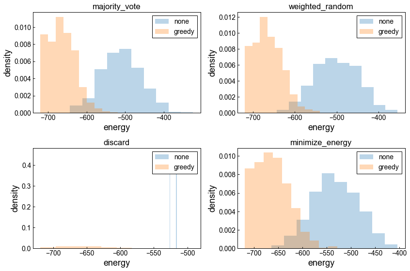
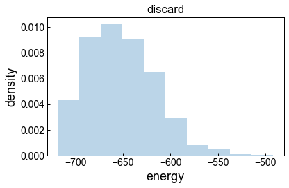

Greedy descent as a post-processing¶
Problem instance¶
import random
import dimod
N = 100
h = {}
J = {(i, j): random.gauss(0, 1) for i in range(N) for j in range(i + 1, N)}
bqm = dimod.BinaryQuadraticModel.from_ising(h, J)
Embed & Post to D-Wave solver¶
from dwave.system import DWaveSampler
from dwave.embedding import embed_bqm
from minorminer import find_embedding
from minorminer.busclique import find_clique_embedding
dw_sampler = DWaveSampler(profile='sigu-adv')
adj = {k: 1 for k in bqm.quadratic.keys()}
%time embedding = find_clique_embedding(g=dw_sampler.to_networkx_graph(), nodes=N, use_cache=True)
%time bqm_embed = embed_bqm(bqm, embedding, dw_sampler.adjacency)
# adj = {k: 1 for k in bqm.quadratic.keys()}
# %time embedding = find_embedding(adj, dw_sampler.edgelist, random_seed=1, threads=4)
# %time bqm_embed = embed_bqm(bqm, embedding, dw_sampler.adjacency)
CPU times: user 226 ms, sys: 16.2 ms, total: 243 ms
Wall time: 252 ms
CPU times: user 79 ms, sys: 632 µs, total: 79.6 ms
Wall time: 79.5 ms
%%time
raw_sampleset = dw_sampler.sample(bqm_embed, num_reads=1000)
CPU times: user 50.1 ms, sys: 860 µs, total: 50.9 ms
Wall time: 50.4 ms
Chain-break resolution¶
from dwave.embedding import unembed_sampleset
from dwave.embedding import majority_vote, weighted_random, discard, MinimizeEnergy
minimize_energy = MinimizeEnergy(bqm, embedding)
%time sampleset_mj = unembed_sampleset(raw_sampleset, embedding, bqm, chain_break_method=majority_vote)
%time sampleset_wr = unembed_sampleset(raw_sampleset, embedding, bqm, chain_break_method=weighted_random)
%time sampleset_dc = unembed_sampleset(raw_sampleset, embedding, bqm, chain_break_method=discard)
%time sampleset_me = unembed_sampleset(raw_sampleset, embedding, bqm, chain_break_method=minimize_energy)
CPU times: user 73 ms, sys: 23.3 ms, total: 96.3 ms
Wall time: 47.4 ms
CPU times: user 115 ms, sys: 24.4 ms, total: 139 ms
Wall time: 36.5 ms
CPU times: user 68.9 ms, sys: 11.8 ms, total: 80.7 ms
Wall time: 20.9 ms
CPU times: user 4.73 s, sys: 70.8 ms, total: 4.8 s
Wall time: 4.53 s
Greedy descent¶
from greedy import SteepestDescentSolver
greedy_sampler = SteepestDescentSolver()
sampleset_mj_greedy = greedy_sampler.sample(bqm, num_reads=1000, initial_states=sampleset_mj.record.sample, seed=1)
sampleset_wr_greedy = greedy_sampler.sample(bqm, num_reads=1000, initial_states=sampleset_wr.record.sample, seed=1)
sampleset_dc_greedy = greedy_sampler.sample(bqm, num_reads=1000, initial_states=sampleset_dc.record.sample, seed=1)
sampleset_me_greedy = greedy_sampler.sample(bqm, num_reads=1000, initial_states=sampleset_me.record.sample, seed=1)
sampleset_rand_init = greedy_sampler.sample(bqm, num_reads=1000, initial_states_generator='random', seed=1)
Results¶
import numpy as np
import matplotlib.pyplot as plt
plt.rcParams['axes.labelsize'] = 18
plt.rcParams['axes.linewidth'] = 1.0
plt.rcParams['figure.facecolor'] = 'w'
plt.rcParams['font.size'] = 14
plt.rcParams['font.sans-serif'] = ['Arial']
plt.rcParams['mathtext.cal'] = 'serif'
plt.rcParams['mathtext.rm'] = 'serif'
plt.rcParams['mathtext.it'] = 'serif:italic'
plt.rcParams['mathtext.bf'] = 'serif:bold'
plt.rcParams['mathtext.fontset'] = 'cm'
plt.rcParams['xtick.direction'] = 'in'
plt.rcParams['xtick.major.width'] = 1.0
plt.rcParams['ytick.direction'] = 'in'
plt.rcParams['ytick.major.width'] = 1.0
plt.rcParams['legend.loc'] = 'best'
plt.rcParams['legend.frameon'] = True
plt.rcParams['legend.framealpha'] = 1.0
plt.rcParams['legend.edgecolor'] = 'black'
plt.rcParams['legend.fancybox'] = False
plt.rcParams['grid.color'] = 'black'
plt.rcParams['grid.linewidth'] = 1.0
fig = plt.figure(figsize=(12, 8))
axes = fig.subplots(nrows=2, ncols=2)
axes[0][0].hist(sampleset_mj.record.energy, density=True, alpha=0.3, label='none')
axes[0][0].hist(sampleset_mj_greedy.record.energy, density=True, alpha=0.3, label='greedy')
axes[0][0].set_title('majority_vote')
axes[0][0].set_xlabel('energy')
axes[0][0].set_ylabel('density')
axes[0][0].legend(loc='upper right')
axes[0][1].hist(sampleset_wr.record.energy, density=True, alpha=0.3, label='none')
axes[0][1].hist(sampleset_wr_greedy.record.energy, density=True, alpha=0.3, label='greedy')
axes[0][1].set_title('weighted_random')
axes[0][1].set_xlabel('energy')
axes[0][1].set_ylabel('density')
axes[0][1].legend(loc='upper right')
axes[1][0].hist(sampleset_dc.record.energy, density=True, alpha=0.3, label='none')
axes[1][0].hist(sampleset_dc_greedy.record.energy, density=True, alpha=0.3, label='greedy')
axes[1][0].set_title('discard')
axes[1][0].set_xlabel('energy')
axes[1][0].set_ylabel('density')
axes[1][0].legend(loc='upper right')
axes[1][1].hist(sampleset_me.record.energy, density=True, alpha=0.3, label='none')
axes[1][1].hist(sampleset_me_greedy.record.energy, density=True, alpha=0.3, label='greedy')
axes[1][1].set_title('minimize_energy')
axes[1][1].set_xlabel('energy')
axes[1][1].set_ylabel('density')
axes[1][1].legend(loc='upper right')
plt.tight_layout()
plt.show()

plt.hist(sampleset_rand_init.record.energy, density=True, alpha=0.3)
plt.title('discard')
plt.xlabel('energy')
plt.ylabel('density')
plt.tight_layout()
plt.show()

import pandas as pd
sampleset_list = [sampleset_mj, sampleset_wr, sampleset_dc, sampleset_me,
sampleset_mj_greedy, sampleset_wr_greedy, sampleset_dc_greedy, sampleset_me_greedy,
sampleset_rand_init]
aggregations = []
for samp in sampleset_list:
energy = samp.record.energy
aggregations.append([np.min(energy), np.mean(energy), np.max(energy), np.std(energy), np.sum(samp.record.num_occurrences)])
index = ['majority_vote', 'weighted_random', 'discard', 'minimize_energy',
'majority_vote(greegy)', 'weighted_random(greegy)', 'discard(greegy)', 'minimize_energy(greegy)',
'random init states(greedy)']
columns = ['energy(min)', 'energy(mean)', 'energy(max)', 'energy(std)', 'num_occurrences']
df_aggr = pd.DataFrame(aggregations, index=index, columns=columns)
df_aggr
| energy(min) | energy(mean) | energy(max) | energy(std) | num_occurrences | |
|---|---|---|---|---|---|
| majority_vote | -642.618362 | -509.955511 | -324.870500 | 50.847352 | 1000 |
| weighted_random | -642.618362 | -500.773185 | -354.848499 | 51.451491 | 1000 |
| discard | -526.492295 | -521.051695 | -515.611096 | 5.440600 | 2 |
| minimize_energy | -664.536202 | -531.262475 | -403.476015 | 46.995649 | 1000 |
| majority_vote(greegy) | -718.968897 | -663.864370 | -519.651562 | 34.613129 | 1000 |
| weighted_random(greegy) | -718.968897 | -663.951955 | -540.121615 | 33.542041 | 1000 |
| discard(greegy) | -718.968897 | -652.018753 | -491.522041 | 36.380169 | 1000 |
| minimize_energy(greegy) | -718.968897 | -662.864103 | -527.712127 | 34.761184 | 1000 |
| random init states(greedy) | -718.968897 | -652.001881 | -491.522041 | 36.427022 | 1000 |
Supplement¶
from greedy import SteepestDescentSampler
SteepestDescentSampler == SteepestDescentSolver
True
from dwave.system import EmbeddingComposite
from greedy import SteepestDescentComposite
ec_sampler = EmbeddingComposite(dw_sampler, find_embedding=find_embedding,
embedding_parameters=dict(random_seed=1, threads=4))
greedy_sampler = SteepestDescentComposite(ec_sampler)
# sampleset = greedy_sampler.sample(bqm, num_reads=100)
from dwave.embedding.pegasus import find_clique_embedding, pegasus_graph
adj = {k: 1 for k in bqm.quadratic.keys()}
# %time embedding = find_clique_embedding(k=10, target_graph=dw_sampler.to_networkx_graph())
# %time embedding = find_clique_embedding(k=10, target_graph=pegasus.pegasus_graph(m=2))
%time embedding = find_clique_embedding(k=10, m=2)
%time bqm_embed = embed_bqm(bqm, embedding, dw_sampler.adjacency)
CPU times: user 29.1 ms, sys: 485 µs, total: 29.6 ms
Wall time: 29.6 ms
---------------------------------------------------------------------------
DisconnectedChainError Traceback (most recent call last)
<timed exec> in <module>
~/.anyenv/envs/pyenv/versions/3.8.2/lib/python3.8/site-packages/dwave/embedding/transforms.py in embed_bqm(source_bqm, embedding, target_adjacency, chain_strength, smear_vartype)
374 else:
375 target_edges = adjacency_to_edges(target_adjacency)
--> 376 embedding = EmbeddedStructure(target_edges, embedding)
377
378 return embedding.embed_bqm(source_bqm, smear_vartype=smear_vartype,
~/.anyenv/envs/pyenv/versions/3.8.2/lib/python3.8/site-packages/dwave/embedding/transforms.py in __init__(self, target_edges, embedding)
97 for u, emb_u in self.items():
98 if len(emb_u) != disjoint_sets[u].size(0):
---> 99 raise DisconnectedChainError(u)
100
101 @property
DisconnectedChainError: chain for 0 is not connected
from dwave.system import DWaveCliqueSampler
dw_clique_sampler = DWaveCliqueSampler(profile='sigu-adv')
sampleset = dw_clique_sampler.sample(bqm, num_reads=1000)
print(dw_clique_sampler.parameters)
{'anneal_offsets': ['parameters'], 'anneal_schedule': ['parameters'], 'annealing_time': ['parameters'], 'answer_mode': ['parameters'], 'flux_biases': ['parameters'], 'flux_drift_compensation': ['parameters'], 'h_gain_schedule': ['parameters'], 'initial_state': ['parameters'], 'max_answers': ['parameters'], 'num_reads': ['parameters'], 'num_spin_reversal_transforms': ['parameters'], 'programming_thermalization': ['parameters'], 'readout_thermalization': ['parameters'], 'reduce_intersample_correlation': ['parameters'], 'reinitialize_state': ['parameters'], 'warnings': []}
dw_clique_sampler.largest_clique_size
120